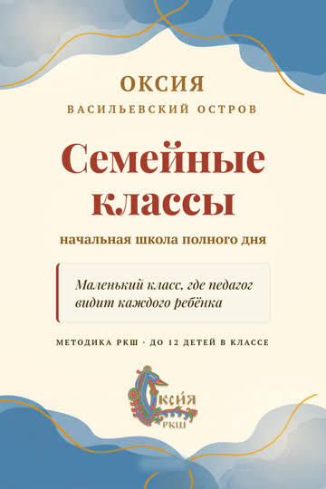
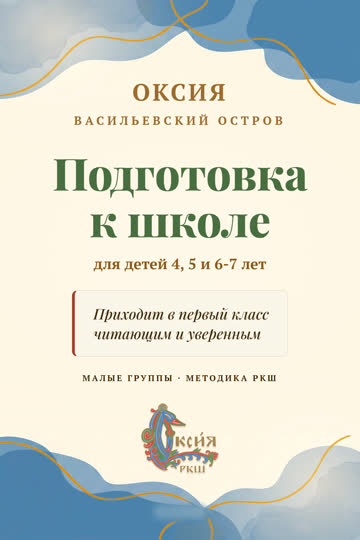
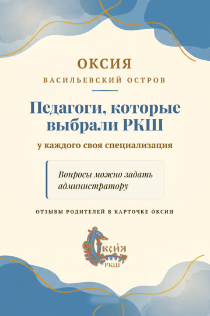
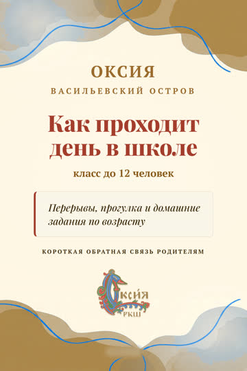
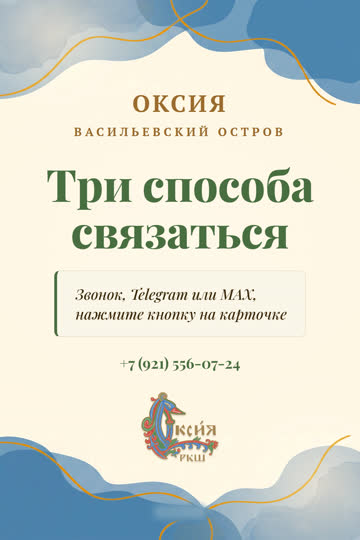

ОКСИЯ: отчёт о работе над карточкой в Яндекс Бизнесе
Школа «Оксия», Васильевский остров, 16-я линия, 7 · по состоянию на 12.11.2026 · работа с 18.08.2026
Что где находится сейчас
| Раздел | Что сделано | Состояние на 12.11 |
|---|---|---|
| Товары и услуги | 10 позиций, новые описания, цены сверены с брифом (флагман 39 000 ₽ стоит первым) | Загружено 12.11, сверено с сервером. Проходит проверку Яндекса, публичную карточку проверим после неё. |
| Истории | 6 Историй, 60 слайдов, кнопка «Записаться» | Загружены 12.11. Скрыты из Карт, пока у карточки не подключён тариф. |
| Публикации | 4 текста, написаны и опубликованы 05.09 | Лежат в кабинете. Скрыты из Карт, пока не подключён тариф. |
| Фото | 115 фото разобраны, размечены и загружены | Загружено. Обложка профиля доступна только с тарифом. |
| Акции | «2 бесплатные пробные недели» (30.08 — 10.09) | Завершена по сроку. Новой акции нет, нужны условия от школы. |
| События | «Открытый урок по подготовке к школе» | Раздел без тарифа недоступен, событий в нём не видно. |
| Отзывы | 23 отзыва на карточке | Растут от самих клиентов, отдельно их «указывать» не нужно. |
Хронология по шагам
Старт: тексты услуг
- Собрана первая сводная страница проекта на GitHub Pages, чтобы заказчик и команда видели результат по ссылке без VPN.
- Написаны короткие описания всех 10 услуг (до 250 знаков, с выгодой для родителя) и полные описания: что получает ребёнок, для кого, частые вопросы, почему так устроено.
- Три прохода шлифовки русского текста: убраны канцелярит, длинные тире, обороты «не X, а Y», склейки двух предложений запятой.
- Убрано упоминание религиозного акцента из текстов, сокращены повторы названия школы.
Главный продукт и структура Историй
- Определён главный продукт школы: семейные классы (начальная школа полного дня). Тексты и обложки выстроены вокруг него, остальные услуги идут вторым планом.
- Структура Историй пересобрана по смыслу в 6 тем: Семейные классы, Подготовка к школе, Дополнительные занятия, Педагоги, Как проходят занятия, Как записаться. В каждой единый призыв записаться.
- Подготовлены 6 обложек Историй и первые 6 черновых обложек товаров с логотипом школы; вариант с бейджем отклонён, оставлены чистые фоны.
- Согласованы тексты 4 публикаций для карточки.
Опора на живой голос школы
- Прочитана группа школы ВКонтакте (тон, философия, смысл названия «Оксия»). Тексты школы и первой публикации переписаны на основе того, что школа уже писала о себе.
- Уточнено склонение названия «ОКСИЯ» (по случаям, а не одним правилом).
- Сводная страница облегчена: картинки вынесены из страницы в отдельные файлы (26 МБ стало 53 КБ), чтобы её можно было открыть с телефона и редактировать.
- Проект выделен в отдельную папку: логотип, черновые картинки, сводная страница.
Реальные фото на карточках
- Обложки 10 товаров собраны из реальных фото школы.
- Подготовлена пилотная История «Подготовка к школе» на 10 слайдов.
- Акции и События взяты из брифа заказчика.
Фото: разбор, метки, загрузка. Прайс и первые публикации
- Получено 115 фото школы. Все просмотрены по одному и разложены по смыслу (подробно в разделе «Фото» ниже).
- Всем фото записаны поисковые метки внутри файла (название, описание, ключевые слова, автор, координаты школы). Подробно ниже.
- Найдено и исправлено: 28 файлов только назывались JPG, а на деле были другого формата (WebP). Площадка могла их не принять. Сконвертированы в настоящий JPEG.
- Фото переименованы в поисковые имена вида oksiya-nachalnaya-shkola-12.jpg.
- Фото загружены в кабинет Яндекс Бизнеса. Лимит площадки: 30 файлов за раз, поэтому грузили пачками и после каждой пачки перезагружали страницу и сверяли счётчик (один раз «Сохранено» показалось, а на сервере счётчик не вырос, пачку перезалили).
- Прайс из 10 позиций загружен одним файлом. При сверке с брифом найдена ошибка: у Начальной школы стояло 38 000 ₽ вместо 39 000 ₽, исправлено.
- Опубликованы 4 текста в разделе «Публикации».
- Акция «2 бесплатные пробные недели» уже существовала в кабинете, дубль не создавали.
- Создано Событие с пробной неделей; на следующий день модерация Яндекса его отклонила (в Событиях нельзя рассказывать об услугах, давать телефоны и скидки). Событие переписано в нейтральный «Открытый урок по подготовке к школе».
Дизайн Историй: от нейросети к вёрстке
- Графика Историй, сделанная нейросетью, не прошла: она не держит точный русский текст, переносы и размеры. Слайды теперь верстаются вручную (HTML и CSS) и сохраняются в размере 1280 на 1920, как требует Яндекс.
- Выбраны шрифт заголовков Playfair Display и палитра: кремовый фон, бронза, акварельные волны из фона школы.
- Сначала согласована обложка, потом 10 слайдов «Подготовки к школе», потом обложки и слайды остальных пяти Историй. Итог: 6 Историй, 60 слайдов, одобрены 06.09.
- Правки заказчика: телефон всегда одной строкой, размер класса «до 12 человек» (как в прайсе). Из Историй убраны даты и всё, что устаревает, даты несёт Акция.
- Истории загружены в кабинет: кнопка «Записаться» со ссылкой на форму заявки, порядок: школа первая.
- Прайс: Яндекс переворачивает порядок строк файла, поэтому флагман (Начальная школа) шёл последним. Файл пересобран в обратном порядке.
Новый фирменный вид по замечаниям заказчика
- Заказчик прислал чистый исходник логотипа (в прежнем был дефект контура). Цвета логотипа измерены по файлу: синий, красный, зелёный, золото. Их и используем.
- Подготовлено два варианта дизайна, заказчик выбрал яркий. Правки голосом по каждой детали: приглушённый бордо вместо яркого красного, подпись «ОКСИЯ» крупнее и в две строки, логотип крупнее и не прижат к волнам, ценник выровнен по базовой линии, значок ₽ убран.
- Обложки всех 6 Историй в новом виде, у каждой свой акцент (бордо, синий, зелёный).
- Все 10 карточек товаров в едином стиле. У Логопеда и Репетитора реальные фото из архива школы.
Перенос нового вида на все слайды и две волны правок
- Яркий вид перенесён на все 60 слайдов. На 10 карточек товаров добавлены кнопка «Записаться» и телефон школы.
- Прайс удалён из кабинета целиком и загружен заново (иначе Яндекс оставлял старый порядок). Истории пересозданы.
- Правки заказчика по 8 слайдам. Найден и исправлен дефект: на 13 слайдах вместо значка выводилось слово «undefined».
- 4 тёмных слайда переделаны на светлый фон (читаемость).
- Ещё 10 слайдов исправлены по замечаниям, затем сделан отдельный аудит всех слайдов на смысл, выгоду для родителя и русский язык (найдены запятая-склейка, калька, потерянная выгода).
Финальная вычитка и загрузка
- Все 60 слайдов и 10 описаний товаров заново вычитаны по правилам коммерческого русского языка. Исправлено 12 слайдов (в том числе оборвавшаяся фраза на слайде 13, штамп «индивидуальный подход», двусмысленное «рост виден», вопросы теперь идут администратору) и 9 описаний товаров (согласование, штампы, повторы).
- Перед заменой прайса сохранена его копия из кабинета. Новый прайс загружен, после этого скачан обратно и сверен: 10 из 10 описаний, цены и фото совпали.
- Все 6 Историй пересозданы с новыми слайдами, кнопкой «Записаться» и ссылкой; старые удалены, порядок: Семейные классы, Подготовка, Дополнительные занятия, Педагоги, Как проходят, Как записаться.
- Число отзывов на слайде (23) сверено с кабинетом.
Фото: распределение и поисковые метки
Было получено 115 фото. Каждое открыто и просмотрено, разложено по тому, что на нём происходит:
| Группа | Фото | Имена файлов |
|---|---|---|
| Товары и услуги / Начальная школа | 38 | oksiya-nachalnaya-shkola-NN.jpg |
| Товары и услуги / Подготовка к школе | 17 | oksiya-podgotovka-k-shkole-NN.jpg |
| Товары и услуги / Чистописание | 14 | по теме каллиграфии |
| Товары и услуги / Лепка из глины | 4 | по теме лепки |
| Товары и услуги / Творческое чтение | 4 | по теме чтения |
| Интерьер (жизнь школы) | 35 | oksiya-interer-NN.jpg |
| Не удалось определить, что на фото | 3 | не загружены, ждут решения |
Какие метки записаны внутри каждого файла (форматы EXIF, IPTC, XMP, их читают Яндекс, Google и другие площадки):
- название и описание кадра с привязкой к теме папки;
- ключевые слова: ОКСИЯ, частная школа, Русская классическая школа, РКШ, Васильевский остров, Санкт-Петербург и слова по теме папки (подготовка к школе, каллиграфия, лепка и т.д.);
- автор и правообладатель: ОКСИЯ;
- координаты школы (59.9341962, 30.2724968), найденные по адресу 16-я линия В.О., 7, а не придуманные.
Что мы обнаружили по ходу: в этом наборе не было ни одного кадра входа и фасада, а также фото для Логопеда и Репетитора. Позже для них нашлись кадры в общем архиве школы. Сейчас в кабинете уже есть фото входа и экстерьера.
Загрузка в кабинет: по 30 файлов за раз, после каждой пачки страница перезагружалась и счётчик сверялся. Итог на 05.09: «Интерьер» 0 → 35, «Услуги» 91 → 167 (76 из 77 новых; один файл потерялся при повторной отправке, не критично). Сегодня в кабинете: Услуги 150, Интерьер 38, Вход 5, Экстерьер 6, Доступность 4, Оборудование 6, Видео 6 (цифры включают фото, добавленные самой школой и пользователями).
Прайс-лист сейчас
| Товар / услуга | Цена | Категория в Яндексе |
|---|---|---|
| Начальная школа (семейные классы) | 39 000 ₽ | Начальная школа Санкт-Петербург |
| Подготовка к школе для 6-7-летних детей | 8 800 ₽ | Подготовка к школе |
| Подготовка к школе для 5-летних детей | 8 800 ₽ | Подготовка к школе |
| Подготовка к школе для 4-летних детей | 6 000 ₽ | Подготовка к школе |
| Курсы по исправлению почерка и каллиграфии | 9 900 ₽ | Каллиграфия и чистописание для детей |
| Логопед | 2 000 ₽ | Занятия с логопедом |
| Помощь школьникам (репетитор) | 1 600 ₽ | Репетитор для школьника |
| Шахматы | 1 100 ₽ | Шахматы для детей |
| Лепка из полимерной глины | 1 100 ₽ | Творческие занятия для детей |
| Творческое чтение | 1 100 ₽ | Творческие занятия для детей |
В полном описании каждой позиции: чем отличается, что получает ребёнок, для кого, частые вопросы, адрес, телефон и строка с поисковыми фразами. Поисковый спрос по услугам проверялся в Яндекс Вордстате (Санкт-Петербург).
Истории (финальные обложки)






Полный просмотр всех 60 слайдов: страница со всеми слайдами.
Как проверяли результат 12.11
- Перед заменой прайса сохранена его копия из кабинета (резерв на случай отката).
- После загрузки прайс скачан обратно с сервера Яндекса и сравнён с файлом по каждой позиции: описания, цены, фото, порядок. Всё совпало.
- У каждой из 6 Историй открыты настройки: название, кнопка «Записаться», ссылка на форму заявки. Всё сохранено.
- Число отзывов (23) сверено с кабинетом.
Что осталось
- Подключить тариф, чтобы Истории, публикации, события и обложка стали видны в Картах.
- Проверить публичную карточку, когда Яндекс завершит проверку прайса (Яндекс обновляет её не сразу).
- Новая акция: прежняя завершилась 10.09. Нужны условия от школы.
- 3 фото, на которых не удалось определить, что изображено: ждут решения школы.